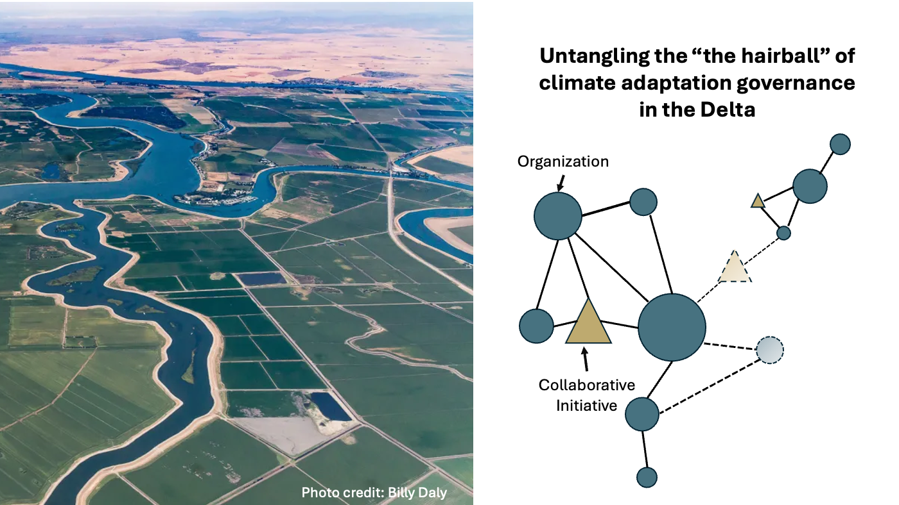
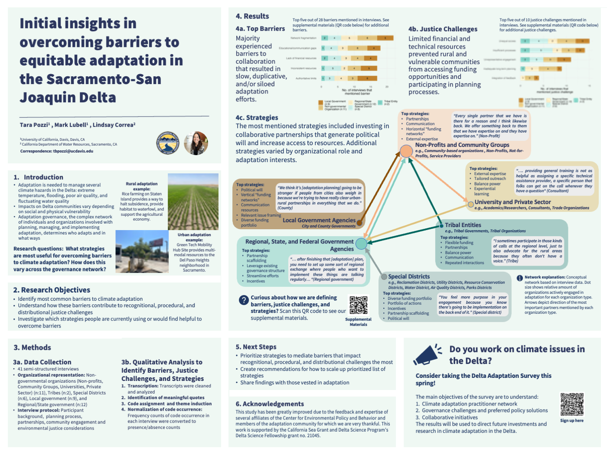

Reducing impacts and harm from flooding, extreme heat, poor air and water quality require collaboration between a complex network of government agencies, non-governmental organizations, communities, and Tribes where the quality and effectiveness of relationships really matter. The Delta landscape is a mosaic of urban and rural, public and private, dry and wet landscapes, and climate change will introduce new interdependencies between these functionally disparate places in the region.

Mapping the network of organizations and collaborative initiatives that plan and implement adaptation strategies like infrastructure upgrades and climate-informed policies will provide a baseline understanding how the network is working and where it is failing. We can then use this information to make data-driven recommendations to intentionally improve it. I utilize interviews with key actors understand the in-depth governance players and needs and an online survey to understand the broader range of practitioners’ policy preferences and most important collaborations.
These data will provide a synthesis of the landscape of adaptation governance in a palatable way. Practitioners will be able to see where they are in the network, potentially find new collaborators, and understand ways they can be more strategic about their participation. Government agencies will be able to understand the most meaningful engagement strategies and how they can target their investments to benefit rural and marginalized communities moving forward.
The Delta is in a pivotal moment where practitioners are learning to leverage their partnerships for positive social and environmental change - knowing the governance landscape is a key step in strengthening this effort.
Research questions
My research project asks three main questions:
Who is involved in climate adaptation and what are they doing?
What are the top governance challenges and preferred adaptation strategies?
What is the structure of the adaptation governance network and how well is it functioning? How does this vary across urban and rural land use contexts?
Research Products
2024 State of the Estuary Poster

Upcoming Research Products
Report based on interview and survey findings about governance challenges/successes for adaptation planning, major collaborative forums, and recommendations to support partnered adaptation efforts
Report based on survey findings with a supplementary website that will host a map of the adaptation governance network for the Delta and key survey results
Video presentation of main interview and survey findings
More information: